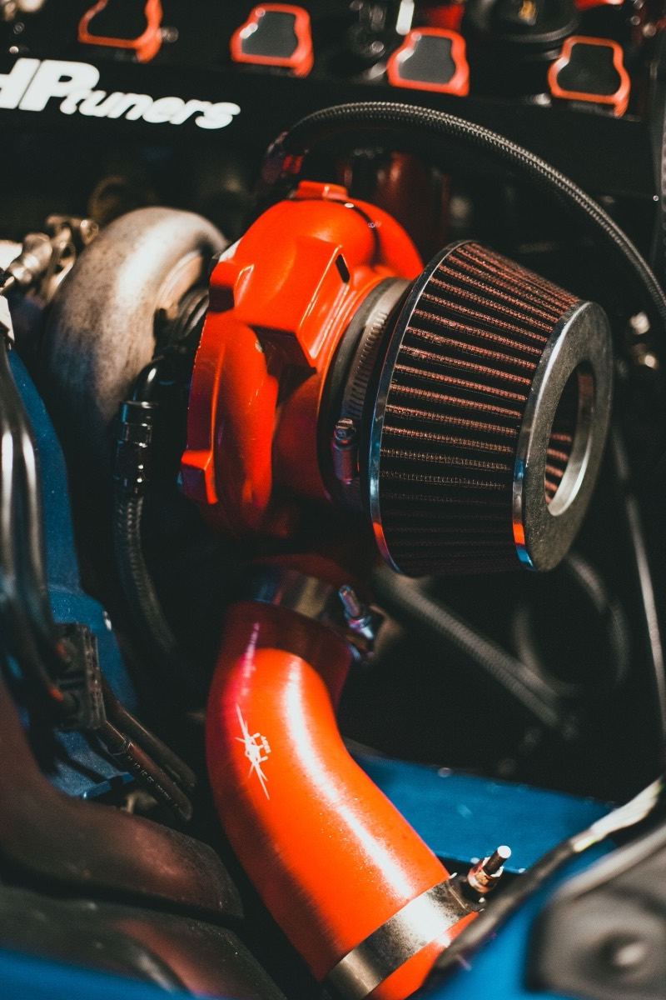

Honda Accord 2.0T Exhaust and Tune: The Order That Actually Works
The Accord 2.0T is the best engine Honda put in a family sedan, and the aftermarket for it is priced like a sports car. A cat-back runs $1,019.99 to $1,495.00. A flash runs $549 to $749. Both are real purchases, and the order you make them in decides which one you actually feel. The temptation is to
Tune first, exhaust second. The cat-back on this car is a sound purchase — KTuner’s own page claims up to 88 lb-ft and 60 whp from the flash, which is more than any exhaust will give you. Spend the $749 before the $1,019.
The 2.0T died with the 10th generation. The 11th-gen Accord’s only 2.0-litre is a hybrid, so every listing that says “2022+ Accord 2.0T” is selling you a fitment that does not exist.
The Accord 2.0T is the best engine Honda put in a family sedan, and the aftermarket for it is priced like a sports car. A cat-back runs $1,019.99 to $1,495.00. A flash runs $549 to $749. Both are real purchases, and the order you make them in decides which one you actually feel.
The temptation is to buy the exhaust first, because it is the part you can hear. That is the wrong way round on this platform, and the reason is in the manufacturer’s own dyno numbers.
What this engine is
The 2.0T is a detuned Civic Type R engine: 2.0 litres, turbocharged, and in the Accord it was sold as the upgrade over the 1.5T. Through the 10th generation it came with a 10-speed automatic, or a 6-speed manual in the Sport trim.
EPA figures from fueleconomy.gov, read 18 November 2026:
| Year | Transmission | Combined | City | Highway |
|---|---|---|---|---|
| 2020 | 10-speed automatic | 27 | 23 | 34 |
| 2021 | 10-speed automatic | 26 | 22 | 32 |
| 2022 | 10-speed automatic (Sport/Touring) | 26 | 22 | 32 |
| 2020 | 6-speed manual | 26 | 22 | 32 |
And then it stopped. The 11th-generation Accord, from 2023, offers a 1.5T and a 2.0-litre hybrid. There is no 2.0T in it. That matters for shopping, and it is the single most common way people get this wrong, so it is worth stating plainly: a listing that advertises “2022+ Honda Accord 2.0T” is describing a car that was never built. The 2.0T is a 2018–2022 part.
The tune is the bigger number
Here is the finding this article is built on. KTuner publishes its own results for the 18–22 Accord 2.0T, read on their site on 18 November 2026, and they are specific:
| Tune | Torque gain | Peak power gain | Peak-to-peak |
|---|---|---|---|
| Stage 1 | up to 50 lb-ft | up to 30 whp | 16 whp |
| Stage 2 | up to 88 lb-ft | up to 60 whp | 27 whp |
Those are the manufacturer’s numbers, not an independent dyno, and they should be read as such. But even discounted heavily they describe a change you will feel, and they cost $549 (KTunerFlash V1.2) or $749 (V2 Touch with the all-in-one display), both read off MAPerformance listings on 18 November 2026.
A cat-back, by contrast, is behind the turbo. On a turbocharged engine the downpipe is the restriction, not the pipe after it. That is the same point the GTI guide makes, and it applies here unchanged: spend on the tune first. The exhaust is what you buy when you want the car to sound like what it now is.

The five cat-backs, priced
Every figure below was read off a live MAPerformance product page on 18 November 2026. Fitment on all five is the 2018–2022 2.0T unless noted.
| System | Price | Reviews | Note |
|---|---|---|---|
| Thermal R&D cat-back | $1,019.99 | 1 | down from $1,199.99, a $180 saving |
| MagnaFlow cat-back (19393) | $1,231.00 | — | 2.0T-specific part number |
| Borla S-Type (140786) | $1,338.99 | 1 | down from $1,499.99 |
| DC Sports system | $1,330.00 | — | down from $1,399.99, fits 1.5T and 2.0T |
| Remark Sports Touring (RK-C4076H-06) | $1,495.00 | — | fits 1.5T and 2.0T |
MagnaFlow cat-back, 2.0T (19393) → $1,231.00 · checked 16 Nov 2026
KTuner Flash V2 Touch → $749.00 · 248 reviews · checked 16 Nov 2026
Two things about that table are worth saying out loud. The spread is $475 for the same job. Every one of these replaces the same section of pipe on the same car. The difference is material, muffler design, tip finish and brand, not the amount of pipe you get.
Review counts are almost meaningless here. The highest count on any of the five is one. That is not because the parts are bad; it is because a family sedan exhaust is a small market compared with a truck or a GTI, and because MAPerformance pools ratings across fitments. Do not read “1 review” as a warning and do not read a high pooled count as evidence about your car.
The cheap parts that are not the exhaust
Three smaller parts came up repeatedly on this platform and they are the ones that actually unlock the tune:
- PRL front pipe upgrade, $429.00. 3-inch mandrel-bent, and PRL’s own description says it is “recommended for customers who have already purchased a downpipe upgrade.” It is the piece after the downpipe, not a substitute for it.
- PRL intercooler charge pipe kit, $429.00. One review.
- PRL flex fuel kit, $579.99. This is what makes the E30 maps in the KTuner tune usable — the manufacturer states all included tunes support E30 “via flex fuel kit installation.” No kit, no E30.
What the tune actually changes, part by part
The headline numbers above are the sales pitch. The feature list on KTuner’s page is the more useful document, because it says what the flash reaches, and several of those things are worth more to a daily driver than 60 whp.
Dual boost targets on the ECO button. This is the standout for a family sedan. The tune keeps factory boost targets in ECO mode and puts the Stage 2 targets in Normal and Sport. You get a quiet, economical car for the commute and the full tune when you press the button, from the same flash, with no second purchase. Almost nothing else on this list gives you a switch.
Boost by gear. Boost is limited per gear rather than delivered all at once. On a front-wheel-drive car with this much torque that is a traction feature as much as a tuning one, and it is the reason a Stage 2 car does not simply spin through first and second.
Throttle dampening removed at low end. The factory softens the first part of the pedal travel for smoothness. KTuner lists this as “Removed throttle dampening on low end, better performance off the line.” This is the change most people describe as “it feels awake,” and it costs no power at all.
Rev hang disabled on the manual. If you have the 6-speed, this is the single most-recommended part of the package. The factory holds the revs up between shifts; KTuner lists it as “Rev Hang Disable (MT Only).” Removing it makes the manual feel like a manual. It does nothing on the automatic, so read the list for your own transmission.
Real-time logging and flash back to stock at any time. Both matter for the warranty conversation and neither is a performance feature. Being able to return the car to factory is what makes this reversible, and reversibility is the whole argument for a flash over a piggyback on a car you still owe money on.
What none of this changes
The tune and the exhaust do not touch emissions equipment. A cat-back starts behind the catalytic converter, so the cat stays. A flash reprograms the factory computer. Neither removes a converter.
KTuner’s own product page is explicit about intended use. It states the unit is “for off-road research and development testing only. Every vehicle should be flashed back to factory before being driven on a public road.” That is the manufacturer’s language, not this site’s framing, and it belongs in front of anyone deciding whether to buy one.
No CARB Executive Order number was found for KTuner on the Accord 2.0T. Their site does not publish one, the applications page does not list one, and the MAPerformance listing carries no CARB text either. For a part that reprograms fuel and ignition, that means in California it is not legal for street use, and a smog inspection is the point where that becomes a practical problem rather than a theoretical one. If a seller tells you otherwise, ask for the EO number on the box.
The cat-backs are a different question, and none of the five listings states CARB status either way. None of the five product pages carried CARB or Executive Order text on 18 November 2026 — they were searched for it. That is silence, not clearance. On a California car, get the answer from the seller in writing before you buy, and do not assume a cat-back is automatically exempt just because the converter stays put.
The order to buy things
- The tune. $549 or $749, and it is the only purchase on this list that changes what the car does rather than what it sounds like.
- Data logging. Bought with the tune. Do not skip it; the whole point of a flash is that you can see what the engine is doing afterward.
- The cat-back. $1,019.99 at the floor. Buy it for sound, because that is what it is.
- The front pipe and flex fuel parts, only if you are going further. The front pipe assumes a downpipe. The flex fuel kit assumes you want E30.
If you only do one thing, do the tune, and put the exhaust on the list for later. The car will be quicker on the day you flash it, and it will sound like a family sedan until you do not.
Topics
- Exhaust